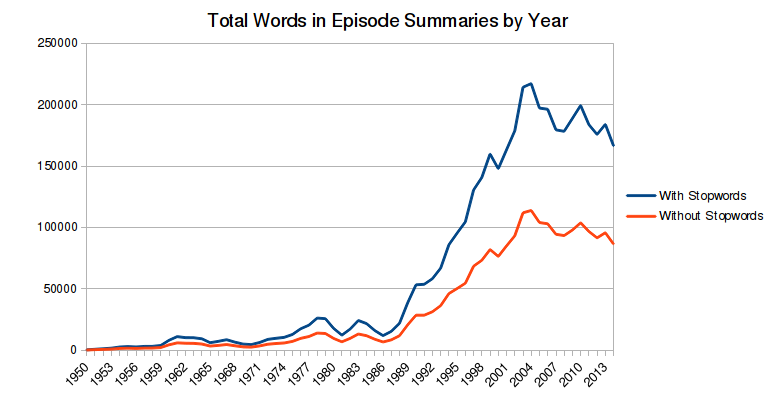
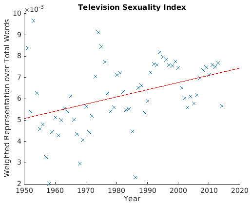
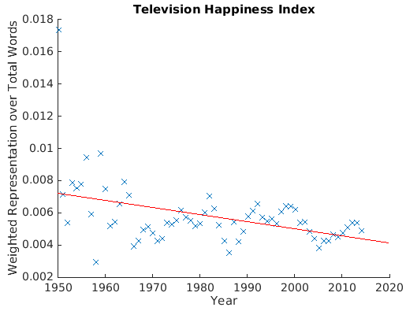
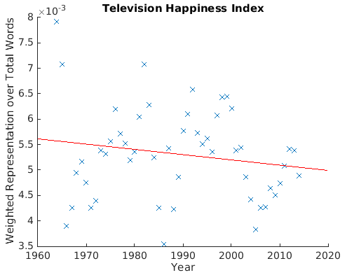
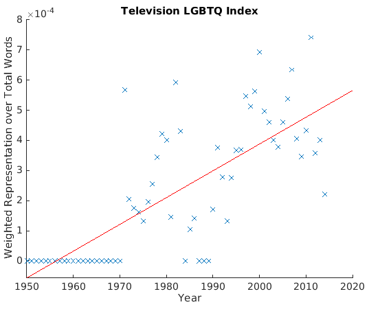
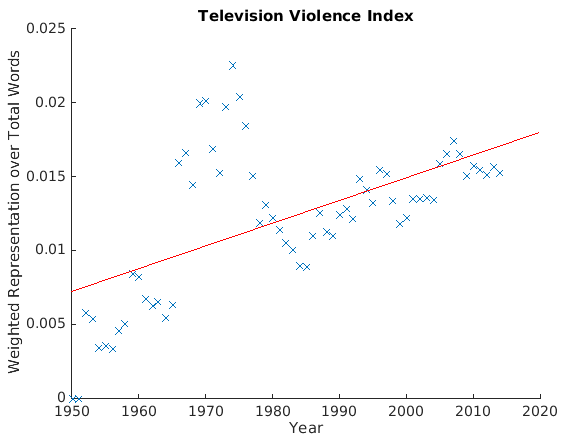
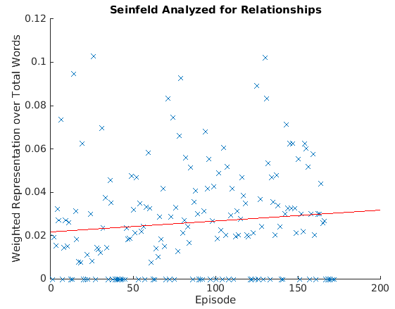

Wikipedia contains a large number of episode summaries of television shows that aired in the USA during the period 1950-2014. Scraping Wikipedia for this data yields in a powerful dataset of word frequencies by year, totaling over four million datapoints. Assuming a close relationship between a society and its televised content, analysis of this dataset enables one to make certain sociological observations. This article presents the dataset, related analytical tools, as well as some informal results of exemplary analysis.
This project contains several different parts:
- Frequencies
- Whole-Episodes
- Selected-Shows
All of these episode summaries were written quite recently, since Wikipedia is only 13 years old. The benefit of this is that it is reasonable to assume that these episode summaries generally use a homogeneous corpus of modern language, so that it is possible to meaningfully compare these texts by year. The purpose of making comparisons between episode summary texts is to drive sociological or anthropological conclusions. This is possible, based on a chain of two assumptions: that an episode summary actually corresponds closely to the content of the televised episode, and that general televised content macroscopically corresponds sufficiently closely to that society's sentiments to change with a change in sentiment. Where the causality lies in that correspondence is unknown (does television reflect a society's interests, or does television define a society's interests?) and beyond the scope of this article, though it is an interesting question to pursue.
Of course there are limitations to these datasets. It may be that the editors of these Wikipedia articles represent some specific subset of society, whereby
the articles may have some systematic bias toward particular themes or toward particular linguistic expressions. Additionally, the modern shows are generally
better-represented than older ones:

This is both a blessing and a curse, because (it seems safe to assume that) the implicit effect is that only a particular subset of older television shows have had their episodes
summarized in significant detail on Wikipedia: specifically, it is likely that the episode summaries of the 1950s through 1980s are generally of the more remarkable or memorable
(i.e. culturally significant) television shows, whereas for more recent television shows, even the ones that aren't of great cultural significance are documented quite thoroughly. All episode summaries are currently
weighted evenly, which yields a bias in favor of the content of the less popular shows (naturally, the most popular/watched shows are a tiny fraction of the total number of shows on air at any given point in time).
It is not known what the relation between less popular and more popular television shows is in the extent to which they represent general societal sentiment. One would assume that the more popular shows better represent general societal sentiment, but this may not necessarily be the case. This uncertainty, of course, significantly reduces the reliability of the results. Nonetheless, I hope that the collected dataset and tools allow for some useful investigations, or at the least, good amusement. Overall, I hope that these dataset and tools
will allow for investigations the way Google Books' ngram viewer does.
The following are some exemplary results that follow from analyses of the datasets I collated with the tools I made. Note that these results do not exhaust (at all) the potential of these tools and datasets.
The big question that fundamentally drove this investigation was “has society
become more sexualized in the last sixty years?” Such a claim is frequently
thrown around, but is rarely backed up with quantitative evidence. Here's an analysis
using Frequencies and this dictionary:

It appears that the small number of samples (see diagram in Introduction) before approx. 1975
causes significant spread among the datapoints, such that this data may not be usable. This is unfortunate. I removed an outlier at 1950.
From about 1975 onwards, we can discern a wavelike pattern in the datapoints: perhaps
this reflects some sort of sociopolitical pattern of liberal/conservative reactions:
a sexually liberal push, then a conservative pull back, etc. This wavelike pattern
could be a consequence of any number of plausible reasons.
Humorously, I note that the most consistent peak in sexual index seems to have
occurred in the 90s, followed by a severe slump. Could it have been caused by a taboo following the Lewinsky scandal?
Could it be a consequence of post-9/11 sorrow and a changed sociopolitical climate?
Thus, the next Frequencies-type analysis uses this dictionary, words commonly
associated with happiness, and attempts to track a ‘happiness index”:

The data before 1965 seems too subject to random error, so we zoom in on 1965 onwards:

Notice how commensurate the Happiness and Sexuality indices are. Both share a slump to an all-time low
at around 1985, and the same slump between 2000 and 2010. Indeed, these datapoints have a correlation of 0.695. That's strong.
(I used MATLAB's corr function on the two sets of datapoints to obtain this result.) I then was concerned,
because both dictionaries contained the common, strongly-weighted word love: could that account for the strength of this correlation? I removed
love from both dictionaries, and ran the computations again. Now these two datasets have a correlation of 0.572, which is still rather strong in this context. (MATLAB reported p-values of 0 for both correlations.) This correlation is a very interesting result — unfortunately, the question of causality is beyond the scope of this article.
During this time period, we've also seen the advent of gay rights, and more recently, greater social equality for LGTBQ persons. This should be reflected clearly by televised content. Another Frequencies-type analysis using this dictionary attempts to track LGBTQ discussion on television:  This looks more or less like what you would expect. Note the low datapoints in the mid-1980s: I assume that this reflects the HIV/AIDS scare. This movement is commensurate with the trough in the Television Sexuality Index, above.
Another big question concerns the focus on violence in this society. Virtually all statistics indicate that the world is continuously becoming a safer place. However, many people are under the (false) impression that the world is continuously becoming more dangerous. Let's see how this is reflected by television. This is yet another Frequencies-type analysis using this dictionary:  I was surprised by the mountainous peak in the 1960/70s. Could this be due to the Vietnam War and the Cold War? I am aware that the that Vietnam War has a reputation as being the “first televised war,” but beyond that, I'd be very curious to find out the sociological/cultural underpinnings of this trend.
Technical note: for all of these results, stopwords were filtered out. Also, if you disagree with my methodology, i.e. word-weights, feel free to change up the weights and run the scripts yourself! I'd like to see what you come up with. From here on, this article is mostly a technical documentation of and usage guide for the datasets and tools that I used to find the above results, and more.
The script getfrequencies.py scrapes Wikipedia for all episode summaries, from which it computes word frequencies by year. The script postprocess.py
needs to be run afterwards to clean up the data. Then it is ready for analysis. The tool analysis.py can assist with the more obvious types of analyses. The dataset
itself is a set of files labeled by year: “1950” through “2014”. Each file contains three lines. The first line is the dictionary of word frequencies. The
second line is the total word count of that dictionary. The third line is the number of unique words in the dictionary. To give an example, this is what a dataset might look like:
{'she': 100, 'wish': 1, 'vies': 1,'official': 1, 'accuses': 3, 'giranins': 1, 'acquired': 3}
110
7
.zip folder labeled DATASET1.
If you just want to work with the datasets, then you don't need to read this section.
getfrequencies.py is written using Python 2.7.6 and using the collections,
bs4 (BeautifulSoup), and urllib2 libraries. It was written for use on a UNIX system, though it probably
works on Windows, too (untested). Here's how it works:
- It starts at Wikipedia's category of television seasons by year. This page contains links to subcategories of television seasons for given years, such as 2002 television seasons, 1954 television seasons, etc. It finds the links to all of these subcategories: one for each year.
- Each of these subcategories lists and links to articles on all television show seasons that aired in a subcategory's respective year. The script finds all these links, and follows them. For example: the category 1990 television seasons contains a link to The Fresh Prince of Bel-Air (Season 1).
- Each of these Television Show (Season n) pages contains a List of Episodes, in which each episode is summarized. The script finds the list of episodes, parses the text (removing all punctuation and other detritus), and adds word occurrences to that year's dictionary of word frequencies.
- The dictionary of word frequencies for each year is output as a file labeled by year, as seen above.
getfrequencies.py only takes one command-line argument: y to filter, or n to not filter stopwords.
Thus, it can be run at the command-line with python getfrequencies.py y or python getfrequencies.py n. When filtering stopwords, it draws on a file that is a list
of stopwords, stopwords-final. This list comprises two lists of stopwords found here and here.
As aforementioned, the output of getfrequencies.py is a set of files, “1950” through “2014”. However, these files tend to have
some issues with Unicode representation. Essentially, some HTML ascii, like is parsed into
Unicode by BeautifulSoup, yielding the non-ascii character \xc2\xa0. Thus, some dictionary entries, like this one, are garbled: 'fianc\xc3\xa9e': 1.
Thankfully, this can be corrected (i.e. these unicode representations can be replaced with regular ascii characters). The script
postprocess.py has been written, in Python 2.7.6, for this purpose. It requires the sys, os, ast, and collections libraries.
postprocess.py takes a directory of getfrequencies.py-output files as a command line argument. For example, suppose I use getfrequencies.py to generate files
“1950” through “2014”, and I put all these
into the directory without-stopwords/. Then I will call python postprocess.py without-stopwords/. The script will create a new directory,
2without-stopwords/, containing the correctly processed files. They may still contain negligible amounts of garbled output, as the postprocessing script does
not filter out all unicode representations. An additional
script, gettotal.py, has been included for testing
the output. gettotal.py also takes a directory as a command-line argument, and reports back various statistics, and writes a file
nonascii that contains a dictionary containing all non-ascii (i.e. garbled) words. In my experience, there are is so little garbled output that it can be safely discarded.
Thus, continuing our example, run python gettotal.py 2without-stopwords/
in order to assess the quality of the processed output.
The post-processed files are in the same format as the pre-processed ones. Thus, each year's file contains a dictionary of word frequency counts for that year on the first line, the total number of words on the second line, and the number of unique words on the third line. This dictionary can be read trivially into python using ast.literal_eval. Note that the format is quite similar to JSON, so parsing this data is easy in many languages.
Note that these scripts have not been optimized for efficiency — running the script to collect word frequencies for 1950 through 2014 may take a few minutes. I think that the workflow could generally be substantially improved and simplified. Unfortunately, I currently cannot justify spending further time on these optimizations.
We can now use the postprocessed data for sociological/cultural analysis. There are many ways to analyze this dataset, for one of which I've built a little tool.
As the data is a set of word-frequency dictionaries by year, the obvious course of attack
is to track the changes in frequency for some word that we are interested in, over time. We observed previously that the total wordcounts generally rise over time,
so it is not wise to track raw frequency changes, but rather
proportion: the fraction of the total wordcount that is the word(s) we are interested in. On top of that, we can weigh particular words more than others when considering
this proportion. For example, suppose we are interested in the popularity of physics on television over time. We'll give “physics” a weight of 1, “quantum” a weight of 0.9 (implying that we think that 90% of uses of the word “quantum” are in the context of physics), the word “gravity” a weight of 0.5, the word “molecule” a weight of 0.9, etc. We can then find the weighted proportion per year, and compare that figure over the course of time. This is what the tool analysis.py does.
analysis.py takes two command line arguments: the first is a dictionary of space-separated weights and words, the second is a directory of postprocessed files (I'll use the ones without stopwords in this example, as stopwords are just semantic clutter in this context). For example, let's suppose the dictionary is called worddict, and these are its contents:
1.0 physics
0.9 quantum
0.5 gravity
0.9 molecule
0.9 atom
0.25 science
1.0 physicist
0.75 nasa
python analysis.py worddict 2without-stopwords/, and it will output a file, dictionary_2withoutstopwords. This file will contain summative data on every year. This data is formatted as in this example:
{'science': 4.25, 'gravity': 1.0, 'physicist': 3.0, 'nasa': 3.0, 'atom': 3.6, 'quantum': 0.9, 'physics': 4.0}
2007 19.75
0.000209074356369
dictoresults.py to format this output. Running python dictoresults.py worddict_2without-stopwords will produce results_worddict_2without-stopwords, which is just a file of space-and-comma-separated years and proportional representations, like “2007, 0.000209074356369” which is easier to work with.
However, note the limitations of this statistic: the word-counts are usually very small. For example, in 2007, the word “physicist” appears three times. This makes it possible for outliers to significantly skew the results. Thus, it is probably important to use large dictionaries with wisely-chosen weights in order to arrive at more reliable results.
One important configuration that you must choose depending on your dictionary is
on line 31 of analysis.py, which gives you the option of matching
words in the text to words in your dictionary either by substring or by
string equality. This is important because some words are often contained
in other words, e.g. “eat” is contained in “eating,“
and “eaten,” but also in “beat,” “neat,” etc.
This is very straight-forward. A script called whole-episodes.py scrapes Wikipedia for all episode summaries. It filters out punctuation and other clutter, and then writes the plain text of the episode summaries to a textfile, separating different episodes with newlines, and separating different shows with double newlines. This script doesn't take any command-line arguments and can thus be run just with python whole-episodes.py. Like the scripts in Frequencies, it relies on the bs4, sys, collections and urllib2 libraries. The advantage of having the plaintext episode summaries is that it allows one to do more sophisticated textual analysis, using tokenization, phrasal search, etc. This dataset is in a .zip folder labeled DATASET2.
This differs from Whole-Episodes only in that (1) it requires the user to select a particular television shows to gather data on, and (2) it runs comparisons on an episodal, rather than on an annual basis. The script to retrieve episode summaries from Wikipedia is retrieve.py. This yields a set of documents (though in some cases, just one) containing episode summaries of the television show, separated by <new episode>. The script text-analysis.py then works similarly to the analysis in Frequencies: it takes a dictionary with weights, reads in every episode, and then computes the weighted representation of the dictionary terms for that episode as a fraction of the number of words in that episode, discounting stopwords. If you wish to not filter out stopwords, just comment out lines 36 through 38, and outdent line 39.
First off, you need a television show you want to investigate. Go to Wikipedia and find that television show's list of episodes. Usually these pages are titled Television Show (Season n). Once you have found these pages, copy-paste the links into a notepad file. I'll use Seinfeld as an example. For Seinfeld, your document of urls (we'll call it seinfurls) should look like this:
https://en.wikipedia.org/wiki/Seinfeld_%28season_1%29 https://en.wikipedia.org/wiki/Seinfeld_%28season_2%29 https://en.wikipedia.org/wiki/Seinfeld_%28season_3%29 https://en.wikipedia.org/wiki/Seinfeld_%28season_4%29 https://en.wikipedia.org/wiki/Seinfeld_%28season_5%29 https://en.wikipedia.org/wiki/Seinfeld_%28season_6%29 https://en.wikipedia.org/wiki/Seinfeld_%28season_7%29 https://en.wikipedia.org/wiki/Seinfeld_%28season_8%29 https://en.wikipedia.org/wiki/Seinfeld_%28season_9%29
These are, in order, the links to the first through ninth seasons of Seinfeld. Now you can runpython retrieve.py seinfurls. It will return a set of files, souped_0 through souped_8. Here, souped_0 corresponds to the page for the first season of Seinfeld, souped_1 corresponds to the second season, etc. and souped_8 corresponds to the ninth season of Seinfeld. Each document is just a list of episodes separated by some newlines and the text <new episode>. Now, place all your souped files into a directory, like seinfeld-episodes/. Now you have a dataset. Because you have the plaintext of the episodes without words filtered, you can conduct whatever Natural Language Processing-type analysis you like. However, I have prepared a small script for the obvious frequency-type analysis.
This small script is
text-analysis.py. It takes three command line arguments: the first is a directory of sequentially numbered files that contain
the episode summaries to be analyzed. The second argument is a dictionary-file of space-separated weights and words, as discussed in the Frequencies section.
The third argument is just a y or n depending on whether or not you want stopwords to be filtered out (y to filter). Note that
if you select y, then you need the file stopwords-final in your working directory.
To continue our example: Seinfeld is famously a show about nothing, but I don't really believe that, so let's investigate the importance of personal relationships in Seinfeld.
So we write this dictionary and save it as dictionary:
0.75 friend
1.0 relationship
0.75 date
1.0 dating
0.5 sex
0.5 love
python text-analysis.py seinfeld-episodes/ dictionary y. It will output a file called seinfeld-analyzed. This outputs a file that looks like this (excerpt):
0.75, 12, 0.0625
0.75, 23, 0.0326086956522
0.75, 35, 0.0214285714286
1.5, 27, 0.0555555555556
0, 28, 0.0
0.75, 25, 0.03
0.75, 34, 0.0220588235294
1.25, 20, 0.0625
matlab-analysis script to do it:

The red regression line shows an upward trend, suggesting that the importance of personal relationships actually grew during the run of Seinfeld. Note, however, that the size of this representation is generally quite small (calculation reveals the all-time mean to be 0.026), so it is plausible that this was merely a minor theme that increased in importance.
- This analysis could be adapted to Wikipedias of other languages — Japanese, German, Russian, Spanish, etc. This would allow one to track and compare particular changes in sentiment over time, across several language groups, i.e. across cultural groups, which would potentially answer interesting questions (e.g. “to what extents have different societies become more sexually liberal in the last fifty years?”), and might yield quantitative indications as to the extent to which cultures have become homogenized in recent decades.
- Beyond just removing punctuation and stopwords, it would be useful to have the option to remove names from the Frequencies dataset, or to track the proportional prevalence of names in episode summaries over time (which could signal if there is some change in how character- or action-driven the episodes are). This would be easy to implement, and just requires an extensive list of names.
- It would be really nice to have an easily-usable JavaScript frontend for this, such that it can actually be used as easily as the Google Books ngram viewer.
The GitHub repository is available here. Please contact me if you find any bugs/errors, or use my work for any interesting derivative work — I'd like to see what you come up with.
This work is licensed under a Creative Commons Attribution-NonCommercial-ShareAlike 4.0 International License.